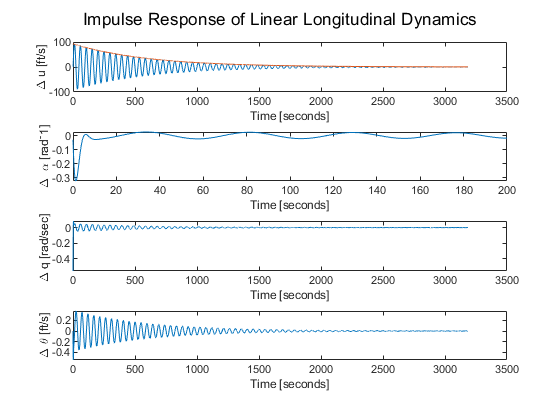
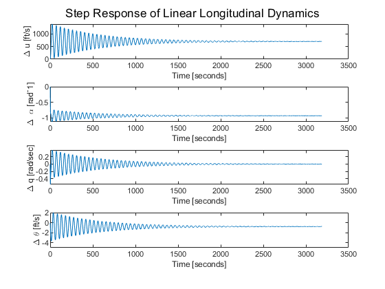
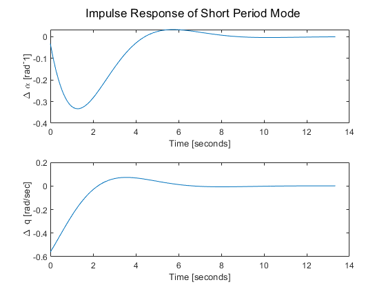
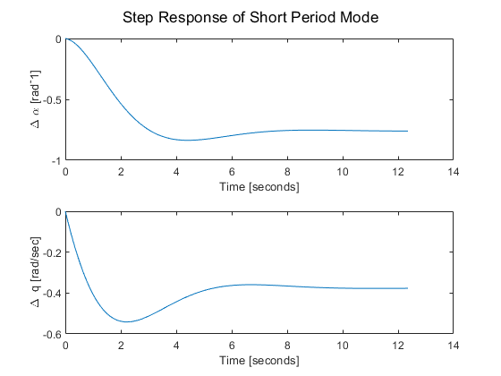
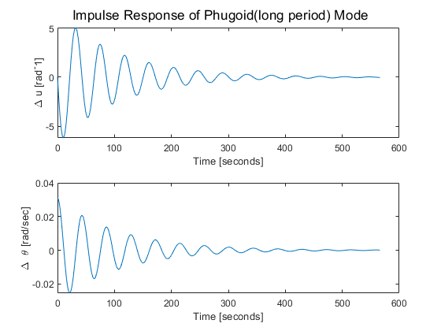
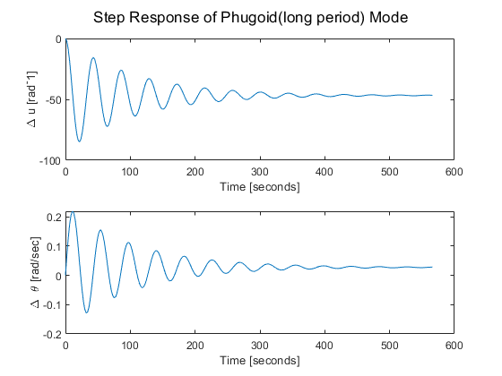

Contents
clear all; close all; clc; Xu =-0.0188; XTu = 0; Xa = 11.5905; Xde = 0; Zu = -0.1862; Za = -149.4408; Zq = -6.8045; Zadot = -8.4426; Zde = -8.7058; Mu = 0.0001; MTu = 0; Ma = -0.5294; MTa = 0; Mq = -0.4275; Madot = -0.0658; Mde = -0.5630; u1 = 279.1094; % ft/s theta1 = 0; g = 32.2; % ft/s^2
Set Up Matrix A, B C, D
R = [Xu+XTu Xa 0 -g*cos(theta1);... Zu Za u1+Zq -g*sin(theta1);... Mu+MTu Ma+MTa Mq 0;... 0 0 1 0]; M = [1 0 0 0; 0 u1-Zadot 0 0;... 0 -Madot 1 0;... 0 0 0 1]; F = [Xde; Zde; Mde; 0]; A = inv(M)*R; B = inv(M)*F; C = eye(4); D = zeros(4,1);
eig Vectors and Values
[eVec,eVal] = eig(A); % Make them unitless eVecUnitless = eVec; eVecUnitless(1,:) = eVec(1,:)/u1; eVecUnitless(3,:) = eVec(3,:)/20; % Not sure how we get 20? % eVecUnitless % Normalize respect to delta theta eVec12 = abs(eVecUnitless(:,1)/eVecUnitless(4,1)); eVec34 = abs(eVecUnitless(:,3)/eVecUnitless(4,3));
Answer Questions
% Short wd = imag(eVal(1,1)); wn = sqrt((real(eVal(1,1)))^2+(wd)^2); damp = abs(real(eVal(1,1))/wn); delT = abs(log(2)/(real(eVal(1,1)))); N = abs(log(2)*wd/(2*pi*real(eVal(1,1)))); % charEqShort=conv([1 -eVal(1,1)],[1 -eVal(2,2)]); % wn = sqrt(charEqShort(end)); % damp = charEqShort(2)/2/wn; % wd = wn*sqrt(1-damp^2); % beta = atan(sqrt(1-damp^2)/damp); % tr = (pi-beta)/wd; % Rise time (0-100%) % tp = pi/wd;% Peak Time % Mp = exp(-damp*pi/sqrt(1-damp^2)); % Maximum overshoot % ts = 4/(damp*wn); % Settling Time (2% criterion) % delT = log(2)/(damp*wn); % N = log(2)*wd/(2*pi*damp*wn); % Long wdLong = imag(eVal(3,3)); wnLong = sqrt((real(eVal(3,3)))^2+(wdLong)^2); dampLong = abs(real(eVal(3,3))/wnLong); delTLong = abs(log(2)/(real(eVal(3,3)))); NLong = abs(log(2)*wdLong/(2*pi*real(eVal(3,3))));
b)
x0 = zeros(4,1); sys = ss(A,B,C,D); [h, t] = impulse(sys); figure(1) sgtitle('Impulse Response of Linear Longitudinal Dynamics') subplot(4,1,1) plot(t,h(:,1)) ylabel('\Delta u [ft/s]'); xlabel('Time [seconds]'); hold on, [pks, locs] = findpeaks(abs(h(:,1))); a2 =-log(pks(1)/pks(end)) /(t(1) - t(end)); a1 = pks(end)/(exp(-a2*t(end))); dampeq =a1*exp(-a2*t); plot(t,dampeq) delTGraphu = log(pks(1)/2/a1)/-a2 ; subplot(4,1,2) plot(t,h(:,2)) ylabel('\Delta \alpha [rad^-1]'); xlabel('Time [seconds]'); xlim([0, 200]) subplot(4,1,3) plot(t,h(:,3)) ylabel('\Delta q [rad/sec] '); xlabel('Time [seconds]') subplot(4,1,4) plot(t,h(:,4)) ylabel('\Delta \theta [ft/s]'); xlabel('Time [seconds]') [hs, ts] = step(sys); figure(2) sgtitle('Step Response of Linear Longitudinal Dynamics') subplot(4,1,1) plot(ts,hs(:,1)) ylabel('\Delta u [ft/s]'); xlabel('Time [seconds]') subplot(4,1,2) plot(ts,hs(:,2)) ylabel('\Delta \alpha [rad^-1]'); xlabel('Time [seconds]') subplot(4,1,3) plot(ts,hs(:,3)) ylabel('\Delta q [rad/sec] '); xlabel('Time [seconds]') subplot(4,1,4) plot(ts,hs(:,4)) ylabel('\Delta \theta [ft/s]'); xlabel('Time [seconds]') 
Problem 2
M2 = [u1 0;
-Madot 1];
R2 = [Za u1;
Ma Mq];
A2 = inv(M2)*R2;
[eVec2,eVal2] = eig(A2);
wd2 = imag(eVal2(1,1));
wn2 = sqrt((real(eVal2(1,1)))^2+(wd2)^2);
damp2 = abs(real(eVal2(1,1))/wn2);
delT2 = abs(log(2)/(real(eVal2(1,1))));
N2 = abs(log(2)*wd2/(2*pi*real(eVal2(1,1))));
% b)
F2 = [Zde;
Mde];
B2 = inv(M2)*F2;
C2 =eye(2);
D2 = zeros(2,1);
sys2 = ss(A2,B2,C2,D2);
[h2, t2] = impulse(sys2);
figure(3)
sgtitle('Impulse Response of Short Period Mode')
subplot(2,1,1)
plot(t2,h2(:,1))
ylabel('\Delta \alpha [rad^-1]');
xlabel('Time [seconds]')
subplot(2,1,2)
plot(t2,h2(:,2))
ylabel('\Delta q [rad/sec]');
xlabel('Time [seconds]')
[h2s, t2s] = step(sys2);
figure(4)
sgtitle('Step Response of Short Period Mode')
subplot(2,1,1)
plot(t2s,h2s(:,1))
ylabel('\Delta \alpha [rad^-1]');
xlabel('Time [seconds]')
subplot(2,1,2)
plot(t2s,h2s(:,2))
ylabel('\Delta q [rad/sec]');
xlabel('Time [seconds]')
  Problem 3
a)
A3 = [Xu+XTu -g;
-Zu/u1 0];
F3 = [Xde;
-Zde/u1];
B3 = F3;
C3 = eye(2);
D3 = 0;
[eVec3,eVal3] = eig(A3);
wd3 = imag(eVal3(1,1));
wn3 = sqrt((real(eVal3(1,1)))^2+(wd3)^2);
damp3 = abs(real(eVal3(1,1))/wn2);
delT3 = abs(log(2)/(real(eVal3(1,1))));
N3 = abs(log(2)*wd3/(2*pi*real(eVal3(1,1))));
sys3 = ss(A3,B3,C3,D3);
[h3, t3] = impulse(sys3);
figure(5)
sgtitle('Impulse Response of Phugoid(long period) Mode')
subplot(2,1,1)
plot(t3,h3(:,1))
ylabel('\Delta u [rad^-1]');
xlabel('Time [seconds]')
subplot(2,1,2)
plot(t3,h3(:,2))
ylabel('\Delta \theta [rad/sec]');
xlabel('Time [seconds]')
[h3s, t3s] = step(sys3);
figure(6)
sgtitle('Step Response of Phugoid(long period) Mode')
subplot(2,1,1)
plot(t3s,h3s(:,1))
ylabel('\Delta u [rad^-1]');
xlabel('Time [seconds]')
subplot(2,1,2)
plot(t3s,h3s(:,2))
ylabel('\Delta \theta [rad/sec]');
xlabel('Time [seconds]')
  Print Answers
fprintf('\nNumber 1 \n'); fprintf('Short Period\n'); fprintf('---------------------------\n'); fprintf('Damped Frequency: %f [rad/s]\n', wd); fprintf('Natural Frequency: %f [rad/s]\n', wn); fprintf('Damping Ratio: %f \n', damp); fprintf('Time to Damp to Half the initial Amplitude: %f [sec]\n', delT); fprintf('Cycle to Damp to Half the initial Amplitude: %f [cycle]\n', N); fprintf('\nLong Period\n'); fprintf('---------------------------\n'); fprintf('Damped Frequency: %f [rad/s]\n', wdLong); fprintf('Natural Frequency: %f [rad/s]\n', wnLong); fprintf('Damping Ratio: %f \n', dampLong); fprintf('Time to damp to half the initial Amplitude: %f [sec]\n', delTLong); fprintf('Cycle to damp to half the initial Amplitude: %f [cycle]\n', NLong); fprintf('\nNumber 2 \n'); fprintf('---------------------------\n'); fprintf('Damped Frequency: %f [rad/s]\n', wd2); fprintf('Natural Frequency: %f [rad/s]\n', wn2); fprintf('Damping Ratio: %f \n', damp2); fprintf('Time to Damp to Half the initial Amplitude: %f [sec]\n', delT2); fprintf('Cycle to Damp to Half the initial Amplitude: %f [cycle]\n', N2); fprintf('\nNumber 3 \n'); fprintf('---------------------------\n'); fprintf('Damped Frequency: %f [rad/s]\n', wd3); fprintf('Natural Frequency: %f [rad/s]\n', wn3); fprintf('Damping Ratio: %f \n', damp3); fprintf('Time to Damp to Half the initial Amplitude: %f [sec]\n', delT3); fprintf('Cycle to Damp to Half the initial Amplitude: %f [cycle]\n', N3);
Number 1 Short Period --------------------------- Damped Frequency: 0.682998 [rad/s] Natural Frequency: 0.853890 [rad/s] Damping Ratio: 0.600178 Time to Damp to Half the initial Amplitude: 1.352520 [sec] Cycle to Damp to Half the initial Amplitude: 0.147022 [cycle] Long Period --------------------------- Damped Frequency: 0.132028 [rad/s] Natural Frequency: 0.132039 [rad/s] Damping Ratio: 0.012647 Time to damp to half the initial Amplitude: 415.083320 [sec] Cycle to damp to half the initial Amplitude: 8.722113 [cycle] Number 2 --------------------------- Damped Frequency: 0.702656 [rad/s] Natural Frequency: 0.870800 [rad/s] Damping Ratio: 0.590676 Time to Damp to Half the initial Amplitude: 1.347591 [sec] Cycle to Damp to Half the initial Amplitude: 0.150703 [cycle] Number 3 --------------------------- Damped Frequency: 0.146263 [rad/s] Natural Frequency: 0.146565 [rad/s] Damping Ratio: 0.010795 Time to Damp to Half the initial Amplitude: 73.739062 [sec] Cycle to Damp to Half the initial Amplitude: 1.716537 [cycle]